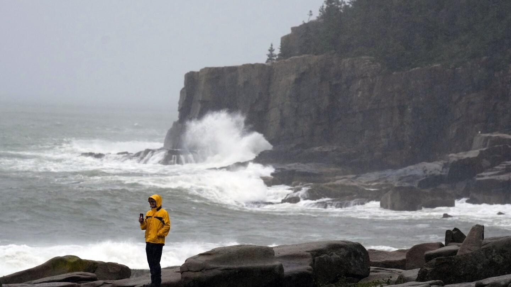

Atlantic storm Lee delivers high winds and rain before forecasters call off warnings in some areasAtlantic storm Lee delivers high winds and rain before forecasters call off all warnings Atlantic storm Lee brought high winds, rough surf and torrential rains to a large swath of New England before making landfall on Saturday in Nova Scotia, Canada. (Sept. 16) New England harbors and fishing villages are being emptied of boats as the region prepares for Hurricane Lee. (Sep 15)(AP video by Rodrique Ngowi and Robert Bukaty) Chris Crawford, of Mount Desert Island, Maine, films the raging surf near Otter Point in Acadia National Park as severe weather associated with storm Lee pounds the region, Saturday, Sept. 16, 2023, in Bar Harbor, Maine. (AP Photo/Robert F. Bukaty) Raging surf hits Otter Point in Acadia National Park as severe weather associated with storm Lee pounds the region, Saturday, Sept. 16, 2023, in Bar Harbor, Maine. (AP Photo/Robert F. Bukaty) The Eden Star, a 70-foot tour boat, is secured to the shore after breaking free of its mooring during storm Lee, Saturday, Sept. 16, 2023, in Bar Harbor, Maine, (AP Photo/Robert F. Bukaty) A worker prepares to unload diesel fuel from the Eden Star, a 70-foot tour boat that broke free of its mooring during storm Lee, Saturday, Sept. 16, 2023, in Bar Harbor, Maine, (AP Photo/Robert F. Bukaty) Waves crash against a breakwater in Port Maitland, Nova Scotia, Canada, as post-tropical cyclone Lee approaches on Saturday, Sept. 16, 2023. (Bill Curry/The Canadian Press via AP) Waves crash against the rocks at Portland Head Light, Saturday, Sept. 15, 2023, in South Portland, Maine. Severe conditions were predicted across parts of Massachusetts and Maine, and hurricane conditions could hit the Canadian provinces of New Brunswick and Nova Scotia, where the storm, Lee, downgraded early Saturday from hurricane to post-tropical cyclone, was expected to make landfall later in the day. (AP Photo/Michael Dwyer) Personnel with the New Brunswick department of transportation and infrastructure block the road next to a large tree that fell on Woodstock Road in Fredericton, N.B., on Saturday, Sept. 16, 2023. Severe conditions were predicted across parts of Massachusetts and Maine, and hurricane conditions could hit the Canadian provinces of New Brunswick and Nova Scotia, where the storm, Lee, downgraded early Saturday from hurricane to post-tropical cyclone, was expected to make landfall later in the day. (Stephen MacGillivray /The Canadian Press via AP) A tourist struggles with his rain poncho in strong wind as weather associated with Storm Lee hits the region, Saturday, Sept. 16, 2023, in Bar Harbor, Maine. Severe conditions were predicted across parts of Massachusetts and Maine, and hurricane conditions could hit the Canadian provinces of New Brunswick and Nova Scotia, where the storm, Lee, downgraded early Saturday from hurricane to post-tropical cyclone, was expected to make landfall later in the day. (AP Photo/Robert F. Bukaty) Two people dance in the rain during storm Lee, Saturday, Sept. 16, 2023, in Bar Harbor, Maine. Severe conditions were predicted across parts of Massachusetts and Maine, and hurricane conditions could hit the Canadian provinces of New Brunswick and Nova Scotia, where the storm, Lee, downgraded early Saturday from hurricane to post-tropical cyclone, was expected to make landfall later in the day. (AP Photo/Robert F. Bukaty) Waves come ashore, Saturday, Sept. 15, 2023, in Hampton Beach, N.H. Severe conditions were predicted across parts of New England and hurricane conditions could hit the Canadian provinces of New Brunswick and Nova Scotia, where the storm, Lee, downgraded early Saturday from hurricane to post-tropical cyclone, was expected to make landfall later in the day.(AP Photo/Michael Dwyer) A warning sign is displayed on Park Loop Rd. along shoreline closure at Acadia National Park in Maine on Saturday, Sept. 16, 2023. Severe conditions were predicted across parts of Massachusetts and Maine, and hurricane conditions could hit the Canadian provinces of New Brunswick and Nova Scotia, where the storm, Lee, downgraded early Saturday from hurricane to post-tropical cyclone, was expected to make landfall later in the day.(AP Photo/Robert Bumsted) Visitors walk along the waterfront in strong wind and rain as weather associated with Hurricane Lee hits the region, Saturday, Sept. 16, 2023, in Bar Harbor, Maine, (AP Photo/Robert F. Bukaty) Waves at Port Maitland Beach crash as post-tropical cyclone Lee approaches in Port Maitland, Nova Scotia, Canada, on Saturday, Sept. 16, 2023. (Bill Curry/The Canadian Press via AP) A downed tree hangs on power lines as post-tropical storm Lee approaches in Yarmouth, Nova Scotia, Canada, on Saturday, Sept. 16, 2023. (Bill Curry/The Canadian Press via AP) City of Saint John workers put caution tape around a large tree that fell in King’s Square, in Saint John, N.B on Saturday, Sept. 16, 2023. Severe conditions were predicted across parts of Massachusetts and Maine, and hurricane conditions could hit the Canadian provinces of New Brunswick and Nova Scotia, where the storm, Lee, downgraded early Saturday from hurricane to post-tropical cyclone, was expected to make landfall later in the day. (Michael Hawkins /The Canadian Press via AP) A pedestrian walks with an umbrella along King Street in Fredericton, N.B. on Saturday, Sept. 16, 2023. Severe conditions were predicted across parts of Massachusetts and Maine, and hurricane conditions could hit the Canadian provinces of New Brunswick and Nova Scotia, where the storm, Lee, downgraded early Saturday from hurricane to post-tropical cyclone, was expected to make landfall later in the day. (Stephen MacGillivray /The Canadian Press via AP) A cyclist and a woman stop to clear debris from the storm drain as rain falls in Fredericton, N.B. on Saturday, Sept. 16, 2023. Severe conditions were predicted across parts of Massachusetts and Maine, and hurricane conditions could hit the Canadian provinces of New Brunswick and Nova Scotia, where the storm, Lee, downgraded early Saturday from hurricane to post-tropical cyclone, was expected to make landfall later in the day. (Stephen MacGillivray /The Canadian Press via AP) A downed tree lays across in Fredericton, N.B. on Saturday, Sept. 16, 2023. Severe conditions were predicted across parts of Massachusetts and Maine, and hurricane conditions could hit the Canadian provinces of New Brunswick and Nova Scotia, where the storm, Lee, downgraded early Saturday from hurricane to post-tropical cyclone, was expected to make landfall later in the day. (Stephen MacGillivray /The Canadian Press via AP) A downed tree is shown in a yard in Fredericton, N.B. on Saturday, Sept. 16, 2023. Severe conditions were predicted across parts of Massachusetts and Maine, and hurricane conditions could hit the Canadian provinces of New Brunswick and Nova Scotia, where the storm, Lee, downgraded early Saturday from hurricane to post-tropical cyclone, was expected to make landfall later in the day. (Stephen MacGillivray /The Canadian Press via AP) Waves crash against a seawall Saturday, Sept. 15, 2023, in Saco, Maine. Severe conditions were predicted across parts of Massachusetts and Maine, and hurricane conditions could hit the Canadian provinces of New Brunswick and Nova Scotia, where the storm, Lee, downgraded early Saturday from hurricane to post-tropical cyclone, was expected to make landfall later in the day. (AP Photo/Michael Dwyer) Visitors stroll by tourist shops in the rain during storm Lee, Saturday, Sept. 16, 2023, in Bar Harbor, Maine. Severe conditions were predicted across parts of Massachusetts and Maine, and hurricane conditions could hit the Canadian provinces of New Brunswick and Nova Scotia, where the storm, Lee, downgraded early Saturday from hurricane to post-tropical cyclone, was expected to make landfall later in the day. (AP Photo/Robert F. Bukaty) A woman takes a photograph of the crashing waves leading to the Halifax Harbor at the Queen’s Marque public space in Halifax, Nova Scotia, on Saturday, Sept. 16, 2023. Severe conditions were predicted across parts of Massachusetts and Maine, and hurricane conditions could hit the Canadian provinces of New Brunswick and Nova Scotia, where the storm, Lee, downgraded early Saturday from hurricane to post-tropical cyclone, was expected to make landfall later in the day. (Kelly Clark /The Canadian Press via AP) Waves crash along the Halifax waterfront in Halifax, Nova Scotia, on Saturday, Sept. 16, 2023. Severe conditions were predicted across parts of Massachusetts and Maine, and hurricane conditions could hit the Canadian provinces of New Brunswick and Nova Scotia, where the storm, Lee, downgraded early Saturday from hurricane to post-tropical cyclone, was expected to make landfall later in the day. (Kelly Clark /The Canadian Press via AP) A woman crosses the street to avoid downed power lines and trees in Halifax, Nova Scotia, on Saturday, Sept. 16, 2023. Severe conditions were predicted across parts of Massachusetts and Maine, and hurricane conditions could hit the Canadian provinces of New Brunswick and Nova Scotia, where the storm, Lee, downgraded early Saturday from hurricane to post-tropical cyclone, was expected to make landfall later in the day. (Kelly Clark /The Canadian Press via AP) A woman struggles to keep her tent upright at the encampment in Victoria Park in Halifax, Nova Scotia, on Saturday, Sept. 16, 2023. Severe conditions were predicted across parts of Massachusetts and Maine, and hurricane conditions could hit the Canadian provinces of New Brunswick and Nova Scotia, where the storm, Lee, downgraded early Saturday from hurricane to post-tropical cyclone, was expected to make landfall later in the day. (Kelly Clark /The Canadian Press via AP) The SS Acadia sits in the Halifax Harbour with Georges Island in the distance at high tide in Halifax, Nova Scotia, on Saturday, Sept. 16, 2023. Severe conditions were predicted across parts of Massachusetts and Maine, and hurricane conditions could hit the Canadian provinces of New Brunswick and Nova Scotia, where the storm, Lee, downgraded early Saturday from hurricane to post-tropical cyclone, was expected to make landfall later in the day. (Kelly Clark /The Canadian Press via AP) A barricade keeps people away from the crashing waves at the Queen’s Marque in Halifax, Nova Scotia, on Saturday, Sept. 16, 2023. Severe conditions were predicted across parts of Massachusetts and Maine, and hurricane conditions could hit the Canadian provinces of New Brunswick and Nova Scotia, where the storm, Lee, downgraded early Saturday from hurricane to post-tropical cyclone, was expected to make landfall later in the day. (Kelly Clark /The Canadian Press via AP) Point Pleasant Park is closed in Halifax, Nova Scotia, on Saturday, Sept. 16, 2023. Severe conditions were predicted across parts of Massachusetts and Maine, and hurricane conditions could hit the Canadian provinces of New Brunswick and Nova Scotia, where the storm, Lee, downgraded early Saturday from hurricane to post-tropical cyclone, was expected to make landfall later in the day. (Kelly Clark /The Canadian Press via AP) A man struggles to walk through strong winds in Halifax, Nova Scotia, on Saturday, Sept. 16, 2023. Severe conditions were predicted across parts of Massachusetts and Maine, and hurricane conditions could hit the Canadian provinces of New Brunswick and Nova Scotia, where the storm, Lee, downgraded early Saturday from hurricane to post-tropical cyclone, was expected to make landfall later in the day. (Kelly Clark/The Canadian Press via AP) A girl braves wet and windy conditions to walk her dog on a pier during storm Lee, Saturday, Sept. 16, 2023, in Bar Harbor, Maine. Severe conditions were predicted across parts of Massachusetts and Maine, and hurricane conditions could hit the Canadian provinces of New Brunswick and Nova Scotia, where the storm, Lee, downgraded early Saturday from hurricane to post-tropical cyclone, was expected to make landfall later in the day. (AP Photo/Robert F. Bukaty) A city worker views a wave crashing along a walkway during storm Lee, Saturday, Sept. 16, 2023, in Bar Harbor, Maine. (AP Photo/Robert F. Bukaty) People watch waves from Lee, Saturday, Sept. 16, 2023, in Rye, N.H. The storm is expected to make landfall Saturday in Canada at near hurricane strength and then move farther into the region. (AP Photo/Caleb Jones) People watch waves from Lee, Saturday, Sept. 16, 2023, in Rye, N.H. The storm is expected to make landfall Saturday in Canada at near hurricane strength and then move farther into the region. (AP Photo/Caleb Jones) People watch waves from Lee, Saturday, Sept. 16, 2023, in Rye, N.H. The storm is expected to make landfall Saturday in Canada at near hurricane strength and then move farther into the region. (AP Photo/Caleb Jones) A woman walks along the rocks near waves from Lee, Saturday, Sept. 16, 2023, in Rye, N.H. The storm is expected to make landfall Saturday in Canada at near hurricane strength and then move farther into the region. (AP Photo/Caleb Jones) People watch rough surf and waves, remnants of Tropical Storm Lee, crash along the shore of Bailey Island, Maine, on Saturday, Sept 16, 2023. (AP Photo/Jim Gerberich) Motorists wait for a tree to be cleared that fell on Woodstock Road in Fredericton, N.B., on Saturday, Sept. 16, 2023. Severe conditions were predicted across parts of Massachusetts and Maine, and hurricane conditions could hit the Canadian provinces of New Brunswick and Nova Scotia, where the storm, Lee, downgraded early Saturday from hurricane to post-tropical cyclone, was expected to make landfall later in the day. (Stephen MacGillivray /The Canadian Press via AP) People watch waves from Lee, Saturday, Sept. 16, 2023, in Rye, N.H. The storm is expected to make landfall Saturday in Canada at near hurricane strength and then move farther into the region. (AP Photo/Caleb Jones) This image provided by Maine State Police shows the vehicle of an Ohio driver who suffered minor injuries Saturday, Sept. 16 2023 after tree downed by the remnants of tropical storm Lee went through his windshield on Route 11 in Moro Plantation, Maine, according to Maine State Police. John Yoder, 23, of Apple Creek, Ohio attempted to stop but couldn’t avoid the tree. Yoder suffered minor cuts but the other five passengers in the van were not injured. Police blamed high winds for the downed tree. (Maine State Police via AP) Chris Crawford, of Mount Desert Island, Maine, films the raging surf near Otter Point in Acadia National Park as severe weather associated with storm Lee pounds the region, Saturday, Sept. 16, 2023, in Bar Harbor, Maine. (AP Photo/Robert F. Bukaty) Chris Crawford, of Mount Desert Island, Maine, films the raging surf near Otter Point in Acadia National Park as severe weather associated with storm Lee pounds the region, Saturday, Sept. 16, 2023, in Bar Harbor, Maine. (AP Photo/Robert F. Bukaty) Raging surf hits Otter Point in Acadia National Park as severe weather associated with storm Lee pounds the region, Saturday, Sept. 16, 2023, in Bar Harbor, Maine. (AP Photo/Robert F. Bukaty) The Eden Star, a 70-foot tour boat, is secured to the shore after breaking free of its mooring during storm Lee, Saturday, Sept. 16, 2023, in Bar Harbor, Maine, (AP Photo/Robert F. Bukaty) A worker prepares to unload diesel fuel from the Eden Star, a 70-foot tour boat that broke free of its mooring during storm Lee, Saturday, Sept. 16, 2023, in Bar Harbor, Maine, (AP Photo/Robert F. Bukaty) A worker prepares to unload diesel fuel from the Eden Star, a 70-foot tour boat that broke free of its mooring during storm Lee, Saturday, Sept. 16, 2023, in Bar Harbor, Maine, (AP Photo/Robert F. Bukaty) Waves crash against a breakwater in Port Maitland, Nova Scotia, Canada, as post-tropical cyclone Lee approaches on Saturday, Sept. 16, 2023. (Bill Curry/The Canadian Press via AP) Waves crash against the rocks at Portland Head Light, Saturday, Sept. 15, 2023, in South Portland, Maine. Severe conditions were predicted across parts of Massachusetts and Maine, and hurricane conditions could hit the Canadian provinces of New Brunswick and Nova Scotia, where the storm, Lee, downgraded early Saturday from hurricane to post-tropical cyclone, was expected to make landfall later in the day. (AP Photo/Michael Dwyer) Waves crash against the rocks at Portland Head Light, Saturday, Sept. 15, 2023, in South Portland, Maine. Severe conditions were predicted across parts of Massachusetts and Maine, and hurricane conditions could hit the Canadian provinces of New Brunswick and Nova Scotia, where the storm, Lee, downgraded early Saturday from hurricane to post-tropical cyclone, was expected to make landfall later in the day. (AP Photo/Michael Dwyer) Personnel with the New Brunswick department of transportation and infrastructure block the road next to a large tree that fell on Woodstock Road in Fredericton, N.B., on Saturday, Sept. 16, 2023. Severe conditions were predicted across parts of Massachusetts and Maine, and hurricane conditions could hit the Canadian provinces of New Brunswick and Nova Scotia, where the storm, Lee, downgraded early Saturday from hurricane to post-tropical cyclone, was expected to make landfall later in the day. (Stephen MacGillivray /The Canadian Press via AP) Personnel with the New Brunswick department of transportation and infrastructure block the road next to a large tree that fell on Woodstock Road in Fredericton, N.B., on Saturday, Sept. 16, 2023. Severe conditions were predicted across parts of Massachusetts and Maine, and hurricane conditions could hit the Canadian provinces of New Brunswick and Nova Scotia, where the storm, Lee, downgraded early Saturday from hurricane to post-tropical cyclone, was expected to make landfall later in the day. (Stephen MacGillivray /The Canadian Press via AP) A tourist struggles with his rain poncho in strong wind as weather associated with Storm Lee hits the region, Saturday, Sept. 16, 2023, in Bar Harbor, Maine. Severe conditions were predicted across parts of Massachusetts and Maine, and hurricane conditions could hit the Canadian provinces of New Brunswick and Nova Scotia, where the storm, Lee, downgraded early Saturday from hurricane to post-tropical cyclone, was expected to make landfall later in the day. (AP Photo/Robert F. Bukaty) A tourist struggles with his rain poncho in strong wind as weather associated with Storm Lee hits the region, Saturday, Sept. 16, 2023, in Bar Harbor, Maine. Severe conditions were predicted across parts of Massachusetts and Maine, and hurricane conditions could hit the Canadian provinces of New Brunswick and Nova Scotia, where the storm, Lee, downgraded early Saturday from hurricane to post-tropical cyclone, was expected to make landfall later in the day. (AP Photo/Robert F. Bukaty) Two people dance in the rain during storm Lee, Saturday, Sept. 16, 2023, in Bar Harbor, Maine. Severe conditions were predicted across parts of Massachusetts and Maine, and hurricane conditions could hit the Canadian provinces of New Brunswick and Nova Scotia, where the storm, Lee, downgraded early Saturday from hurricane to post-tropical cyclone, was expected to make landfall later in the day. (AP Photo/Robert F. Bukaty) Two people dance in the rain during storm Lee, Saturday, Sept. 16, 2023, in Bar Harbor, Maine. Severe conditions were predicted across parts of Massachusetts and Maine, and hurricane conditions could hit the Canadian provinces of New Brunswick and Nova Scotia, where the storm, Lee, downgraded early Saturday from hurricane to post-tropical cyclone, was expected to make landfall later in the day. (AP Photo/Robert F. Bukaty) Waves come ashore, Saturday, Sept. 15, 2023, in Hampton Beach, N.H. Severe conditions were predicted across parts of New England and hurricane conditions could hit the Canadian provinces of New Brunswick and Nova Scotia, where the storm, Lee, downgraded early Saturday from hurricane to post-tropical cyclone, was expected to make landfall later in the day.(AP Photo/Michael Dwyer) Waves come ashore, Saturday, Sept. 15, 2023, in Hampton Beach, N.H. Severe conditions were predicted across parts of New England and hurricane conditions could hit the Canadian provinces of New Brunswick and Nova Scotia, where the storm, Lee, downgraded early Saturday from hurricane to post-tropical cyclone, was expected to make landfall later in the day.(AP Photo/Michael Dwyer) A warning sign is displayed on Park Loop Rd. along shoreline closure at Acadia National Park in Maine on Saturday, Sept. 16, 2023. Severe conditions were predicted across parts of Massachusetts and Maine, and hurricane conditions could hit the Canadian provinces of New Brunswick and Nova Scotia, where the storm, Lee, downgraded early Saturday from hurricane to post-tropical cyclone, was expected to make landfall later in the day.(AP Photo/Robert Bumsted) A warning sign is displayed on Park Loop Rd. along shoreline closure at Acadia National Park in Maine on Saturday, Sept. 16, 2023. Severe conditions were predicted across parts of Massachusetts and Maine, and hurricane conditions could hit the Canadian provinces of New Brunswick and Nova Scotia, where the storm, Lee, downgraded early Saturday from hurricane to post-tropical cyclone, was expected to make landfall later in the day.(AP Photo/Robert Bumsted) Visitors walk along the waterfront in strong wind and rain as weather associated with Hurricane Lee hits the region, Saturday, Sept. 16, 2023, in Bar Harbor, Maine, (AP Photo/Robert F. Bukaty) Waves at Port Maitland Beach crash as post-tropical cyclone Lee approaches in Port Maitland, Nova Scotia, Canada, on Saturday, Sept. 16, 2023. (Bill Curry/The Canadian Press via AP) A downed tree hangs on power lines as post-tropical storm Lee approaches in Yarmouth, Nova Scotia, Canada, on Saturday, Sept. 16, 2023. (Bill Curry/The Canadian Press via AP) City of Saint John workers put caution tape around a large tree that fell in King’s Square, in Saint John, N.B on Saturday, Sept. 16, 2023. Severe conditions were predicted across parts of Massachusetts and Maine, and hurricane conditions could hit the Canadian provinces of New Brunswick and Nova Scotia, where the storm, Lee, downgraded early Saturday from hurricane to post-tropical cyclone, was expected to make landfall later in the day. (Michael Hawkins /The Canadian Press via AP) City of Saint John workers put caution tape around a large tree that fell in King’s Square, in Saint John, N.B on Saturday, Sept. 16, 2023. Severe conditions were predicted across parts of Massachusetts and Maine, and hurricane conditions could hit the Canadian provinces of New Brunswick and Nova Scotia, where the storm, Lee, downgraded early Saturday from hurricane to post-tropical cyclone, was expected to make landfall later in the day. (Michael Hawkins /The Canadian Press via AP) A pedestrian walks with an umbrella along King Street in Fredericton, N.B. on Saturday, Sept. 16, 2023. Severe conditions were predicted across parts of Massachusetts and Maine, and hurricane conditions could hit the Canadian provinces of New Brunswick and Nova Scotia, where the storm, Lee, downgraded early Saturday from hurricane to post-tropical cyclone, was expected to make landfall later in the day. (Stephen MacGillivray /The Canadian Press via AP) A pedestrian walks with an umbrella along King Street in Fredericton, N.B. on Saturday, Sept. 16, 2023. Severe conditions were predicted across parts of Massachusetts and Maine, and hurricane conditions could hit the Canadian provinces of New Brunswick and Nova Scotia, where the storm, Lee, downgraded early Saturday from hurricane to post-tropical cyclone, was expected to make landfall later in the day. (Stephen MacGillivray /The Canadian Press via AP) A cyclist and a woman stop to clear debris from the storm drain as rain falls in Fredericton, N.B. on Saturday, Sept. 16, 2023. Severe conditions were predicted across parts of Massachusetts and Maine, and hurricane conditions could hit the Canadian provinces of New Brunswick and Nova Scotia, where the storm, Lee, downgraded early Saturday from hurricane to post-tropical cyclone, was expected to make landfall later in the day. (Stephen MacGillivray /The Canadian Press via AP) A cyclist and a woman stop to clear debris from the storm drain as rain falls in Fredericton, N.B. on Saturday, Sept. 16, 2023. Severe conditions were predicted across parts of Massachusetts and Maine, and hurricane conditions could hit the Canadian provinces of New Brunswick and Nova Scotia, where the storm, Lee, downgraded early Saturday from hurricane to post-tropical cyclone, was expected to make landfall later in the day. (Stephen MacGillivray /The Canadian Press via AP) A downed tree lays across in Fredericton, N.B. on Saturday, Sept. 16, 2023. Severe conditions were predicted across parts of Massachusetts and Maine, and hurricane conditions could hit the Canadian provinces of New Brunswick and Nova Scotia, where the storm, Lee, downgraded early Saturday from hurricane to post-tropical cyclone, was expected to make landfall later in the day. (Stephen MacGillivray /The Canadian Press via AP) A downed tree lays across in Fredericton, N.B. on Saturday, Sept. 16, 2023. Severe conditions were predicted across parts of Massachusetts and Maine, and hurricane conditions could hit the Canadian provinces of New Brunswick and Nova Scotia, where the storm, Lee, downgraded early Saturday from hurricane to post-tropical cyclone, was expected to make landfall later in the day. (Stephen MacGillivray /The Canadian Press via AP) A downed tree is shown in a yard in Fredericton, N.B. on Saturday, Sept. 16, 2023. Severe conditions were predicted across parts of Massachusetts and Maine, and hurricane conditions could hit the Canadian provinces of New Brunswick and Nova Scotia, where the storm, Lee, downgraded early Saturday from hurricane to post-tropical cyclone, was expected to make landfall later in the day. (Stephen MacGillivray /The Canadian Press via AP) A downed tree is shown in a yard in Fredericton, N.B. on Saturday, Sept. 16, 2023. Severe conditions were predicted across parts of Massachusetts and Maine, and hurricane conditions could hit the Canadian provinces of New Brunswick and Nova Scotia, where the storm, Lee, downgraded early Saturday from hurricane to post-tropical cyclone, was expected to make landfall later in the day. (Stephen MacGillivray /The Canadian Press via AP) Waves crash against a seawall Saturday, Sept. 15, 2023, in Saco, Maine. Severe conditions were predicted across parts of Massachusetts and Maine, and hurricane conditions could hit the Canadian provinces of New Brunswick and Nova Scotia, where the storm, Lee, downgraded early Saturday from hurricane to post-tropical cyclone, was expected to make landfall later in the day. (AP Photo/Michael Dwyer) Waves crash against a seawall Saturday, Sept. 15, 2023, in Saco, Maine. Severe conditions were predicted across parts of Massachusetts and Maine, and hurricane conditions could hit the Canadian provinces of New Brunswick and Nova Scotia, where the storm, Lee, downgraded early Saturday from hurricane to post-tropical cyclone, was expected to make landfall later in the day. (AP Photo/Michael Dwyer) Visitors stroll by tourist shops in the rain during storm Lee, Saturday, Sept. 16, 2023, in Bar Harbor, Maine. Severe conditions were predicted across parts of Massachusetts and Maine, and hurricane conditions could hit the Canadian provinces of New Brunswick and Nova Scotia, where the storm, Lee, downgraded early Saturday from hurricane to post-tropical cyclone, was expected to make landfall later in the day. (AP Photo/Robert F. Bukaty) Visitors stroll by tourist shops in the rain during storm Lee, Saturday, Sept. 16, 2023, in Bar Harbor, Maine. Severe conditions were predicted across parts of Massachusetts and Maine, and hurricane conditions could hit the Canadian provinces of New Brunswick and Nova Scotia, where the storm, Lee, downgraded early Saturday from hurricane to post-tropical cyclone, was expected to make landfall later in the day. (AP Photo/Robert F. Bukaty) A woman takes a photograph of the crashing waves leading to the Halifax Harbor at the Queen’s Marque public space in Halifax, Nova Scotia, on Saturday, Sept. 16, 2023. Severe conditions were predicted across parts of Massachusetts and Maine, and hurricane conditions could hit the Canadian provinces of New Brunswick and Nova Scotia, where the storm, Lee, downgraded early Saturday from hurricane to post-tropical cyclone, was expected to make landfall later in the day. (Kelly Clark /The Canadian Press via AP) A woman takes a photograph of the crashing waves leading to the Halifax Harbor at the Queen’s Marque public space in Halifax, Nova Scotia, on Saturday, Sept. 16, 2023. Severe conditions were predicted across parts of Massachusetts and Maine, and hurricane conditions could hit the Canadian provinces of New Brunswick and Nova Scotia, where the storm, Lee, downgraded early Saturday from hurricane to post-tropical cyclone, was expected to make landfall later in the day. (Kelly Clark /The Canadian Press via AP) Waves crash along the Halifax waterfront in Halifax, Nova Scotia, on Saturday, Sept. 16, 2023. Severe conditions were predicted across parts of Massachusetts and Maine, and hurricane conditions could hit the Canadian provinces of New Brunswick and Nova Scotia, where the storm, Lee, downgraded early Saturday from hurricane to post-tropical cyclone, was expected to make landfall later in the day. (Kelly Clark /The Canadian Press via AP) Waves crash along the Halifax waterfront in Halifax, Nova Scotia, on Saturday, Sept. 16, 2023. Severe conditions were predicted across parts of Massachusetts and Maine, and hurricane conditions could hit the Canadian provinces of New Brunswick and Nova Scotia, where the storm, Lee, downgraded early Saturday from hurricane to post-tropical cyclone, was expected to make landfall later in the day. (Kelly Clark /The Canadian Press via AP) A woman crosses the street to avoid downed power lines and trees in Halifax, Nova Scotia, on Saturday, Sept. 16, 2023. Severe conditions were predicted across parts of Massachusetts and Maine, and hurricane conditions could hit the Canadian provinces of New Brunswick and Nova Scotia, where the storm, Lee, downgraded early Saturday from hurricane to post-tropical cyclone, was expected to make landfall later in the day. (Kelly Clark /The Canadian Press via AP) A woman crosses the street to avoid downed power lines and trees in Halifax, Nova Scotia, on Saturday, Sept. 16, 2023. Severe conditions were predicted across parts of Massachusetts and Maine, and hurricane conditions could hit the Canadian provinces of New Brunswick and Nova Scotia, where the storm, Lee, downgraded early Saturday from hurricane to post-tropical cyclone, was expected to make landfall later in the day. (Kelly Clark /The Canadian Press via AP) A woman struggles to keep her tent upright at the encampment in Victoria Park in Halifax, Nova Scotia, on Saturday, Sept. 16, 2023. Severe conditions were predicted across parts of Massachusetts and Maine, and hurricane conditions could hit the Canadian provinces of New Brunswick and Nova Scotia, where the storm, Lee, downgraded early Saturday from hurricane to post-tropical cyclone, was expected to make landfall later in the day. (Kelly Clark /The Canadian Press via AP) A woman struggles to keep her tent upright at the encampment in Victoria Park in Halifax, Nova Scotia, on Saturday, Sept. 16, 2023. Severe conditions were predicted across parts of Massachusetts and Maine, and hurricane conditions could hit the Canadian provinces of New Brunswick and Nova Scotia, where the storm, Lee, downgraded early Saturday from hurricane to post-tropical cyclone, was expected to make landfall later in the day. (Kelly Clark /The Canadian Press via AP) The SS Acadia sits in the Halifax Harbour with Georges Island in the distance at high tide in Halifax, Nova Scotia, on Saturday, Sept. 16, 2023. Severe conditions were predicted across parts of Massachusetts and Maine, and hurricane conditions could hit the Canadian provinces of New Brunswick and Nova Scotia, where the storm, Lee, downgraded early Saturday from hurricane to post-tropical cyclone, was expected to make landfall later in the day. (Kelly Clark /The Canadian Press via AP) The SS Acadia sits in the Halifax Harbour with Georges Island in the distance at high tide in Halifax, Nova Scotia, on Saturday, Sept. 16, 2023. Severe conditions were predicted across parts of Massachusetts and Maine, and hurricane conditions could hit the Canadian provinces of New Brunswick and Nova Scotia, where the storm, Lee, downgraded early Saturday from hurricane to post-tropical cyclone, was expected to make landfall later in the day. (Kelly Clark /The Canadian Press via AP) A barricade keeps people away from the crashing waves at the Queen’s Marque in Halifax, Nova Scotia, on Saturday, Sept. 16, 2023. Severe conditions were predicted across parts of Massachusetts and Maine, and hurricane conditions could hit the Canadian provinces of New Brunswick and Nova Scotia, where the storm, Lee, downgraded early Saturday from hurricane to post-tropical cyclone, was expected to make landfall later in the day. (Kelly Clark /The Canadian Press via AP) A barricade keeps people away from the crashing waves at the Queen’s Marque in Halifax, Nova Scotia, on Saturday, Sept. 16, 2023. Severe conditions were predicted across parts of Massachusetts and Maine, and hurricane conditions could hit the Canadian provinces of New Brunswick and Nova Scotia, where the storm, Lee, downgraded early Saturday from hurricane to post-tropical cyclone, was expected to make landfall later in the day. (Kelly Clark /The Canadian Press via AP) Point Pleasant Park is closed in Halifax, Nova Scotia, on Saturday, Sept. 16, 2023. Severe conditions were predicted across parts of Massachusetts and Maine, and hurricane conditions could hit the Canadian provinces of New Brunswick and Nova Scotia, where the storm, Lee, downgraded early Saturday from hurricane to post-tropical cyclone, was expected to make landfall later in the day. (Kelly Clark /The Canadian Press via AP) Point Pleasant Park is closed in Halifax, Nova Scotia, on Saturday, Sept. 16, 2023. Severe conditions were predicted across parts of Massachusetts and Maine, and hurricane conditions could hit the Canadian provinces of New Brunswick and Nova Scotia, where the storm, Lee, downgraded early Saturday from hurricane to post-tropical cyclone, was expected to make landfall later in the day. (Kelly Clark /The Canadian Press via AP) A man struggles to walk through strong winds in Halifax, Nova Scotia, on Saturday, Sept. 16, 2023. Severe conditions were predicted across parts of Massachusetts and Maine, and hurricane conditions could hit the Canadian provinces of New Brunswick and Nova Scotia, where the storm, Lee, downgraded early Saturday from hurricane to post-tropical cyclone, was expected to make landfall later in the day. (Kelly Clark/The Canadian Press via AP) A man struggles to walk through strong winds in Halifax, Nova Scotia, on Saturday, Sept. 16, 2023. Severe conditions were predicted across parts of Massachusetts and Maine, and hurricane conditions could hit the Canadian provinces of New Brunswick and Nova Scotia, where the storm, Lee, downgraded early Saturday from hurricane to post-tropical cyclone, was expected to make landfall later in the day. (Kelly Clark/The Canadian Press via AP) A girl braves wet and windy conditions to walk her dog on a pier during storm Lee, Saturday, Sept. 16, 2023, in Bar Harbor, Maine. Severe conditions were predicted across parts of Massachusetts and Maine, and hurricane conditions could hit the Canadian provinces of New Brunswick and Nova Scotia, where the storm, Lee, downgraded early Saturday from hurricane to post-tropical cyclone, was expected to make landfall later in the day. (AP Photo/Robert F. Bukaty) A girl braves wet and windy conditions to walk her dog on a pier during storm Lee, Saturday, Sept. 16, 2023, in Bar Harbor, Maine. Severe conditions were predicted across parts of Massachusetts and Maine, and hurricane conditions could hit the Canadian provinces of New Brunswick and Nova Scotia, where the storm, Lee, downgraded early Saturday from hurricane to post-tropical cyclone, was expected to make landfall later in the day. (AP Photo/Robert F. Bukaty) A city worker views a wave crashing along a walkway during storm Lee, Saturday, Sept. 16, 2023, in Bar Harbor, Maine. (AP Photo/Robert F. Bukaty) People watch waves from Lee, Saturday, Sept. 16, 2023, in Rye, N.H. The storm is expected to make landfall Saturday in Canada at near hurricane strength and then move farther into the region. (AP Photo/Caleb Jones) People watch waves from Lee, Saturday, Sept. 16, 2023, in Rye, N.H. The storm is expected to make landfall Saturday in Canada at near hurricane strength and then move farther into the region. (AP Photo/Caleb Jones) People watch waves from Lee, Saturday, Sept. 16, 2023, in Rye, N.H. The storm is expected to make landfall Saturday in Canada at near hurricane strength and then move farther into the region. (AP Photo/Caleb Jones) People watch waves from Lee, Saturday, Sept. 16, 2023, in Rye, N.H. The storm is expected to make landfall Saturday in Canada at near hurricane strength and then move farther into the region. (AP Photo/Caleb Jones) People watch waves from Lee, Saturday, Sept. 16, 2023, in Rye, N.H. The storm is expected to make landfall Saturday in Canada at near hurricane strength and then move farther into the region. (AP Photo/Caleb Jones) People watch waves from Lee, Saturday, Sept. 16, 2023, in Rye, N.H. The storm is expected to make landfall Saturday in Canada at near hurricane strength and then move farther into the region. (AP Photo/Caleb Jones) A woman walks along the rocks near waves from Lee, Saturday, Sept. 16, 2023, in Rye, N.H. The storm is expected to make landfall Saturday in Canada at near hurricane strength and then move farther into the region. (AP Photo/Caleb Jones) A woman walks along the rocks near waves from Lee, Saturday, Sept. 16, 2023, in Rye, N.H. The storm is expected to make landfall Saturday in Canada at near hurricane strength and then move farther into the region. (AP Photo/Caleb Jones) People watch rough surf and waves, remnants of Tropical Storm Lee, crash along the shore of Bailey Island, Maine, on Saturday, Sept 16, 2023. (AP Photo/Jim Gerberich) Motorists wait for a tree to be cleared that fell on Woodstock Road in Fredericton, N.B., on Saturday, Sept. 16, 2023. Severe conditions were predicted across parts of Massachusetts and Maine, and hurricane conditions could hit the Canadian provinces of New Brunswick and Nova Scotia, where the storm, Lee, downgraded early Saturday from hurricane to post-tropical cyclone, was expected to make landfall later in the day. (Stephen MacGillivray /The Canadian Press via AP) Motorists wait for a tree to be cleared that fell on Woodstock Road in Fredericton, N.B., on Saturday, Sept. 16, 2023. Severe conditions were predicted across parts of Massachusetts and Maine, and hurricane conditions could hit the Canadian provinces of New Brunswick and Nova Scotia, where the storm, Lee, downgraded early Saturday from hurricane to post-tropical cyclone, was expected to make landfall later in the day. (Stephen MacGillivray /The Canadian Press via AP) People watch waves from Lee, Saturday, Sept. 16, 2023, in Rye, N.H. The storm is expected to make landfall Saturday in Canada at near hurricane strength and then move farther into the region. (AP Photo/Caleb Jones) People watch waves from Lee, Saturday, Sept. 16, 2023, in Rye, N.H. The storm is expected to make landfall Saturday in Canada at near hurricane strength and then move farther into the region. (AP Photo/Caleb Jones) This image provided by Maine State Police shows the vehicle of an Ohio driver who suffered minor injuries Saturday, Sept. 16 2023 after tree downed by the remnants of tropical storm Lee went through his windshield on Route 11 in Moro Plantation, Maine, according to Maine State Police. John Yoder, 23, of Apple Creek, Ohio attempted to stop but couldn’t avoid the tree. Yoder suffered minor cuts but the other five passengers in the van were not injured. Police blamed high winds for the downed tree. (Maine State Police via AP) This image provided by Maine State Police shows the vehicle of an Ohio driver who suffered minor injuries Saturday, Sept. 16 2023 after tree downed by the remnants of tropical storm Lee went through his windshield on Route 11 in Moro Plantation, Maine, according to Maine State Police. John Yoder, 23, of Apple Creek, Ohio attempted to stop but couldn’t avoid the tree. Yoder suffered minor cuts but the other five passengers in the van were not injured. Police blamed high winds for the downed tree. (Maine State Police via AP) BAR HARBOR, Maine (AP) — Atlantic storm Lee — which made landfall at near-hurricane strength, bringing destructive winds and torrential rains to New England and Maritime Canada — kept weakening Sunday after officials withdrew warnings and predicted the storm would disappear early this week. The U.S. National Hurricane Center said Sunday morning that the post-tropical cyclone was about 135 miles (215 kilometers) west of Channel-Port Aux Basques, Newfoundland. The top sustained wind speed was 45 mph (70 kph) with some higher gusts expected. “Gradual weakening is forecast during the next couple of days, and Lee could dissipate on Tuesday,” the U.S. hurricane center said. The sky was sunny in Maine on Sunday morning. Gov. Janet Mills suspended a state of emergency. Less than 5% of electricity customers were still without power, down from 11% by midday Saturday during the height of the storm. In Canada, 14% of Nova Scotia had no electricity, down from 27% on Saturday, with smaller numbers in New Brunswick and Prince Edward Island. The center discontinued a tropical storm warning for the coast of Maine late Saturday. It reported late Sunday morning that all tropical storm warnings for Canada were discontinued. Storm surges were expected to subside on Sunday after being forecast as up to 3 feet (0.91 meters) on Saturday along coastal areas, the hurricane center said. A 51-year-old motorist in Searsport, Maine, died Saturday after a large tree limb fell on his vehicle on U.S. Highway 1 during high winds. The limb brought down live power lines and utility workers had to cut power before removing the man, who died later at a hospital, Police Chief Brian Lunt said. A driver suffered minor injuries Saturday, after a tree downed by Lee went through his windshield on Route 11 in Moro Plantation, Maine, according to Maine State Police. John Yoder, 23, of Apple Creek, Ohio, attempted to stop but couldn’t avoid the tree. Yoder suffered minor cuts but the other five passengers in the van were not injured. Police blamed high winds for the downed tree. Chris Crawford, of Mount Desert Island, Maine, films the raging surf near Otter Point in Acadia National Park as severe weather associated with storm Lee pounds the region, Saturday, Sept. 16, 2023, in Bar Harbor, Maine. (AP Photo/Robert F. Bukaty) The storm was tracked as moving around 22 mph (35 kph) and expected to proceed northeast, taking the weather system across the Canadian Maritimes. Rainfall was expected to be an additional 1 inch (25 millimeters) or less for portions of eastern Maine, New Brunswick and Nova Scotia, the U.S. storm center said. In Bar Harbor, Maine, the touristy gateway to Acadia National Park, a whale watch vessel broke free of its mooring and crashed ashore Saturday. Authorities worked to offload 1,800 gallons (6,813 liters) of diesel fuel to prevent it from spilling into the ocean. Lee flooded coastal roads in Nova Scotia and took ferries out of service while fanning anxiety in a region still reeling from wildfires and severe flooding this summer. The province’s largest airport, Halifax Stanfield International, canceled all flights. “People are exhausted,” said Pam Lovelace, a councilor in Halifax. “It’s so much in such a small time period.” Hurricane-force winds extended as far as 140 miles (220 kilometers) from Lee’s center, with tropical storm-force winds extending as far as 320 miles (515 kilometers), enough to cover all of Maine and much of Maritime Canada. The storm skirted some of the most waterlogged areas of Massachusetts that experienced severe flash flooding days earlier, when fast water washed out roads, caused sinkholes, damaged homes and flooded vehicles. In eastern Maine, winds died down enough by late afternoon Saturday for utility workers to begin using bucket trucks to make repairs. The entire region has experienced an especially wet summer, ranking second in the number of rainy days in Portland, Maine — and Lee’s high winds toppled trees stressed by the rain-soaked ground in Maine, the nation’s most heavily wooded state. This image provided by Maine State Police shows the vehicle of an Ohio driver who suffered minor injuries Saturday, Sept. 16 2023 after tree downed by the remnants of tropical storm Lee went through his windshield on Route 11 in Moro Plantation, Maine. (Maine State Police via AP) Cruise ships found refuge at berths in Portland, Maine, while lobstermen in Bar Harbor and elsewhere pulled traps from the water and hauled boats inland. Billy Bob Faulkingham, House Republican leader of the Maine Legislature, and another lobsterman survived after their boat overturned while hauling traps ahead of the storm Friday, officials said. The boat’s emergency locator beacon alerted authorities and the pair clung to the hull until help arrived, said Winter Harbor Police Chief Danny Mitchell. The 42-foot (12.8-meter) boat sank. “They’re very lucky to be alive,” Mitchell said. Lee shared some characteristics with 2012’s Superstorm Sandy. Both storms were once-strong hurricanes that became post-tropical cyclones — cyclonic storms that have lost most of their tropical characteristics — before landfall. But Sandy caused billions of dollars in damage and was blamed for dozens of deaths in New York and New Jersey. Lee also was not anywhere near as severe as the remnants of Hurricane Fiona, which a year ago washed houses into the ocean in eastern Canada, knocked out power to most of two provinces and swept a woman into the sea. Destructive hurricanes are relatively rare so far north. The Great New England Hurricane of 1938 brought gusts as high as 186 mph (300 kph) and sustained winds of 121 mph (195 kph) at Massachusetts’ Blue Hill Observatory. There have been no storms that powerful in recent years. Separately, Tropical Storm Nigel was strengthening and expected to become a hurricane by Monday, the U.S. hurricane center said. It appeared to pose no threats to the U.S. or Canada. It was about 990 miles (1,595 kilometers) northeast of the Lesser Antilles and about 1,115 miles (1,790 kilometers) east-southeast of Bermuda. It had maximum sustained winds of 60 mph (95 kph) and was moving north-northwest at 13 mph (20 kph). ___ Sharp reported from Portland, Maine. Associated Press journalists Robert Bumsted in Cape Elizabeth, Maine; Patrick Whittle in Portland, Maine; Michael Casey in Boston; Rio Yamat in Las Vegas; Mark Thiessen in Anchorage, Alaska; Rob Gillies in Toronto; and Kathy McCormack in Concord, New Hampshire, contributed to this report. |
 |